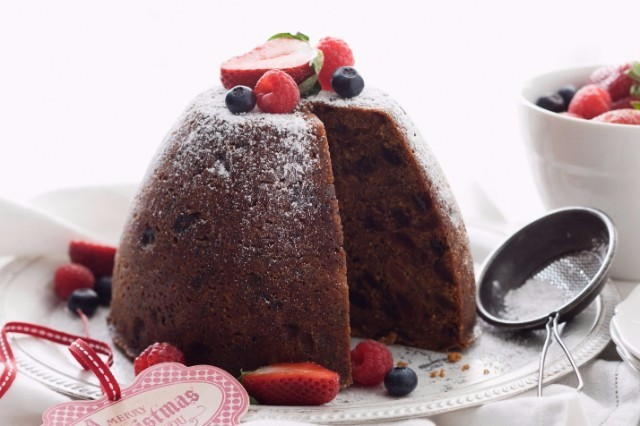

Pudding

Bánh Pudding là một món bánh tráng miệng rất thông dụng ở các nước phương Tây. Tên gọi Pudding được bắt nguồn từ tiếng Pháp Boudin, có nguồn gốc từ tiếng Latinh Botellus, có nghĩa là “xúc xích nhỏ”, chỉ những loại thịt bọc được dùng trong các món tráng miệng ở châu Âu thời Trung Cổ.
Ngày nay, nói đến bánh Pudding, người ta sẽ nhớ ngay đến một loại bánh ngọt mềm, thành phần chủ yếu là sữa tươi nên rất giàu dinh dưỡng, nhìn bề ngoài khá giống với đông sương và để tăng hương vị, các Đầu bếp thường cho thêm trà xanh, socola, dâu dạng bột, hoa quả khô… Tuy nhiên, ngược dòng thời gian, vào thế kỉ 15, Pudding được làm từ mận, rượu vang, thịt bê thái nhỏ, vụn bánh mỳ, thảo dược, hành rau, trái cây khô và gia vị. Đến khoảng thế kỷ thứ 16, các loại rau và thịt dần được thay thế. Ở thế kỷ thứ 19 thì thành phần và vị của bánh Pudding rất gần với bánh Pudding ngày nay. Người ta còn cho vào bánh vài hạt đậu hoặc đồng xu và tin rằng người ăn phải phần bánh này sẽ gặp may mắn cả năm.